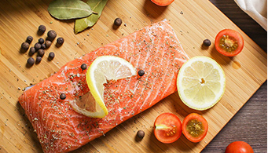
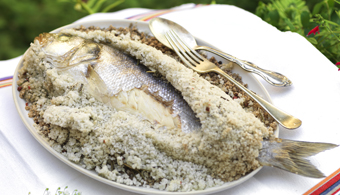
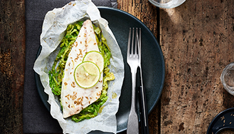

Les produits
D’AQUACULTURE
MARITIME

Le saumon
La plupart des saumons mis sur le marché et consommés sont désormais issus de piscicultures; le saumon fait l'objet d'un élevage spécifique (dit « Salmoniculture »). Frais ou fumé, il est très apprécié de nombreux restaurateurs et consommateurs.

Le bar
Le bar fait partie des quelques espèces « pionnières » de l'aquaculture marine dont les essais d'élevage larvaire ont débuté en France dans les années 70.

Le daurade
La daurade est, comme le bar et le turbot, une espèce dont l'aquaculture intensive a fait l'objet de recherches dès les années 70.